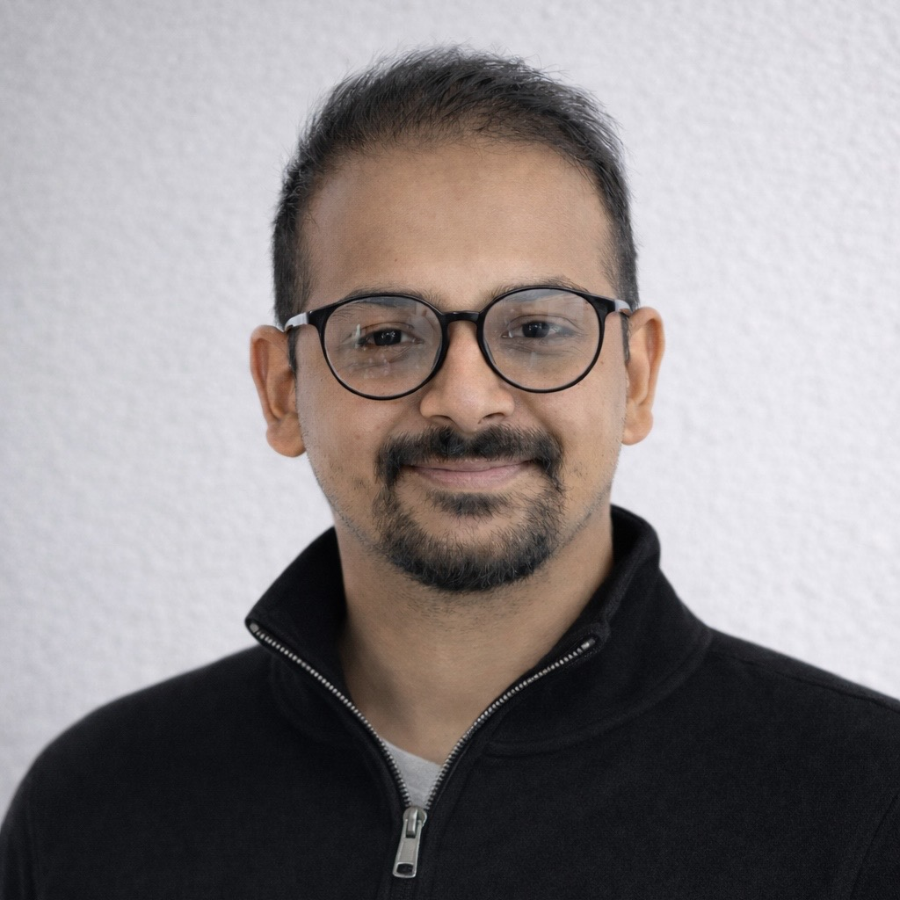

PhD candidate at Cleveland State University. My work sits at the boundary of physics-based simulation and machine learning. I study how vWF polymer chains behave under shear flow using bead-spring models and deep autoencoders.
Using physics-based models and machine learning together to understand how things move, stretch, and change.
vWF polymer chains undergo dramatic conformational changes under shear flow, going from coiled to fully stretched. I simulate this using bead-spring models and overdamped Langevin dynamics, then train autoencoders to learn low-dimensional representations of chain conformations. UMAP and t-SNE reveal transition structure that is invisible in raw data.
Earlier work on energy access in rural Nepal: techno-economic modeling of biomass cookstoves, pyrolytic systems, and ground-source heat pumps for off-grid communities. Led to a peer-reviewed publication in IOP Conference Series.
Physics tells you what to look for. Machine learning tells you where it hides. The interesting problems live at the boundary.
Peer-reviewed publications and conference proceedings.
Presented at the 20th U.S. National Congress on Theoretical and Applied Mechanics (USNCTAM20), Physics-Based Data-Driven Modeling and Uncertainty Quantification track, Pasadena, CA, Jun 2026
Dilute polymer suspensions interacting with hydrodynamic shear flow exhibit complex, highly nonlinear conformational dynamics arising from the interplay between flow-induced forces, internal structural constraints governing advection and reeling, and stochastic perturbations. Under shear flow, long-chain polymers undergo repeated folding, rolling, and unfolding events, giving rise to a rich spectrum of conformational states. These conformations play a critical role in determining polymer function, as folding and unfolding behavior directly influence biomechanical and biochemical activity. However, conventional scalar descriptors such as instantaneous extension length and radius of gyration are often insufficient to distinguish these states or to predict subsequent dynamical outcomes, particularly in regimes where similar global measures correspond to qualitatively different behaviors.
In this work, we leverage large-scale, physics-based direct numerical simulations of polymer–fluid interactions to generate extensive ensembles of high-dimensional, time-resolved polymer configurations. To systematically organize this complex data, polymer conformations are represented as graphs and analyzed using unsupervised, data-driven representation learning with autoencoder–decoder architectures and attention-based pooling. This approach yields low-dimensional latent embeddings that preserve essential structural and topological features, enabling consistent identification of physically meaningful conformational states, including coiled, partially extended, protruded, and extended configurations.
Uncertainty is characterized by conditioning polymer extension outcomes on learned conformational states, revealing intrinsic uncertainty in the dynamical evolution of polymers under shear flow. In particular, minimum-extension (globular) configurations are identified as metastable decision states from which polymers may evolve toward distinct macroscopic outcomes. By analyzing probability distributions of extension outcomes conditioned on state, we characterize the likelihood and range of possible extensions. This enables us to distinguish conformational states that deterministically suppress large extension and exhibit low intrinsic uncertainty from states that admit multiple competing outcomes and therefore exhibit high intrinsic uncertainty. These results illustrate how physics-based simulation ensembles can be mined to distinguish deterministic and stochastic regimes in complex flow-driven polymer dynamics.
Keywords: shear flow, polymer unfolding, conformational states, autoencoders, attention pooling, graph representation learning, uncertainty quantification, latent embedding, metastable states, direct numerical simulation
@inproceedings{upreti2026state,
title = {State-Dependent Uncertainty in Flow-Induced Polymer Unfolding Dynamics},
author = {Upreti, Saugat and Chengalrayan, Sruthi and Usta, Mustafa},
booktitle = {20th U.S. National Congress on Theoretical and Applied Mechanics (USNCTAM20)},
year = {2026},
month = jun,
address = {Pasadena, CA, USA},
note = {Physics-Based Data-Driven Modeling and Uncertainty Quantification track}
}
Presented at the 20th U.S. National Congress on Theoretical and Applied Mechanics (USNCTAM20), Bio-Fluid Mechanics track, Pasadena, CA, Jun 2026
The mechanics of deformable biological macromolecules is central to many physiological processes, yet remains poorly understood when multiple physical interactions coexist. A prominent example is von Willebrand Factor (vWF), a large multimeric polymer whose conformation is altered under shear and extensional flow, transitioning from a compact globular structure to an extended conformation as hydrodynamic forces overcome internal elastic resistance. A key feature of vWF is its A1 domain, which governs interactions with other biomolecules and surfaces through electrostatic charges. In blood flow, vWF coexists with extracellular vesicles (EVs), nanoscale particles with negatively charged surfaces, introducing long-range electrostatic interactions into an already complex fluid-structure system. How these interactions alter polymer dynamics under flow remains an open question in biofluid mechanics.
Here, we investigate coupled hydrodynamic and electrostatic mechanics of a flexible polymer interacting with charged particles in shear flow using multiscale multiphase direct numerical simulations. The polymer is modelled as a bead-spring chain coupled to the lattice Boltzmann solver through Langevin dynamics, enabling resolution of polymer elasticity, hydrodynamic interactions, and thermal fluctuations. Suspended particles representing EVs interact with the polymer through long-range electrostatic coupling. This unified, two-way coupled framework enables systematic analysis of flow-dependent interaction regimes governing polymer conformational dynamics.
The results demonstrate that polymer conformation is governed by a balance between shear-induced hydrodynamic stretching and electrostatic restoring interactions arising from oppositely charged particle–polymer interactions. In the absence of electrostatic interactions, polymer unfolding occurs when hydrodynamic forces exceed the intrinsic elastic restoring force, defining a critical shear rate for extension. The presence of charged particles introduces an additional electrostatic contribution to the effective restoring force, stabilizing compact polymer configurations and shifting the critical shear rate for unfolding to higher values. This stabilization effect increases with particle concentration. As the imposed shear rate increases beyond this modified threshold, hydrodynamic forces dominate the force balance, reducing particle–polymer proximity and weakening electrostatic interaction energy. Under these conditions, electrostatic stabilization becomes ineffective, and the polymer undergoes sustained elongation. Simulations with neutral particles serve as a control case and exhibit no measurable shift in the critical shear rate or conformational statistics, confirming that the observed stabilization and threshold shift arise from electrostatic–hydrodynamic coupling rather than purely hydrodynamic interactions. These results demonstrate how charged particles modify flow-induced conformational dynamics of flexible macromolecules and provide a mechanics framework for understanding polymer behavior in complex biological flows where electrostatic interactions coexist with hydrodynamic forcing.
Keywords: von Willebrand factor, extracellular vesicles, electrostatic interactions, bead-spring chain, lattice Boltzmann method, hydrodynamic shear flow, critical shear rate, multiphase simulation, biofluid mechanics, A1 domain
@inproceedings{chengalrayan2026biofluid,
title = {Biofluid Mechanics of Von Willebrand Factor Interactions with Extracellular Vesicles},
author = {Chengalrayan, Sruthi and Upreti, Saugat and Usta, Mustafa},
booktitle = {20th U.S. National Congress on Theoretical and Applied Mechanics (USNCTAM20)},
year = {2026},
month = jun,
address = {Pasadena, CA, USA},
note = {Bio-Fluid Mechanics track}
}
Poster presented at the 17th U.S. National Congress on Computational Mechanics (USNCCM17), Jul 2025
@inproceedings{upreti2025data,
title = {Data-Driven Discovery of Polymer Shape Dynamics in Hydrodynamic Environments},
author = {Upreti, Saugat and Chengalrayan, Sruthi and Usta, Mustafa},
booktitle = {17th U.S. National Congress on Computational Mechanics (USNCCM17)},
year = {2025},
month = jul,
note = {Poster}
}
IOP Conference Series: Materials Science and Engineering, Vol. 1279, No. 1, Article 012007
The electrical supply system in most underdeveloped nations is incredibly undependable. The country's existing distribution system has experienced regular power outages due to population growth, industrial expansion, rough terrain, and a long-distance transmission network. The conventional approach to centralized generation and transmission is failing to address this challenge, and as a response, the utilization of renewable energy sources is expanding day by day to alleviate the energy crisis.
The purpose of this study is to perform a techno-economic analysis of a 100% renewable off-grid and on-grid hybrid energy system for the electrification of Thakle Namuna Basti, a small communal village in Melamchi, Sindhupalchok. The HOMER Pro 3.14 program is used to analyze the feasibility of the suggested hybrid power system. The available resources are provided as input parameters along with load data, and HOMER Pro optimizes the list of system architectures for that specific site. In addition, sensitivity analysis is performed for the proposed HES (Hybrid Energy System).
The main outcome of the project is to find the best system architecture based on various economic parameters such as Net Present Cost (NPC), Levelized Cost of Electricity (LCOE), and Operating and Maintenance Cost. The system with the lowest NPC and LCOE constitutes the best system architecture.
Keywords: hybrid energy system, HOMER Pro, off-grid electrification, on-grid hybrid system, rural Nepal, techno-economic analysis, Net Present Cost, Levelized Cost of Electricity, renewable energy, distributed energy system, micro-grid, solar PV, biomass, energy access, Sindhupalchok, Melamchi
@article{shah2023technoeconomic,
title = {Techno-Economic Analysis of Energy Systems in Thakle Namuna Basti: A Case Study of Distributed Energy System Planning in Rural Nepal},
author = {Shah, M. and Koirala, K. and Upreti, S. and Sanjel, N.},
journal = {IOP Conference Series: Materials Science and Engineering},
volume = {1279},
number = {1},
pages = {012007},
year = {2023},
publisher = {IOP Publishing},
doi = {10.1088/1757-899X/1279/1/012007},
url = {https://doi.org/10.1088/1757-899X/1279/1/012007}
}
Research projects, engineering designs, and computational studies.
Bead-spring model simulation of vWF polymer chains under Couette flow, combined with deep autoencoders to learn latent representations of chain conformation. Applies UMAP and t-SNE for dimensionality reduction to reveal coil-to-stretch transition dynamics in a low-dimensional embedding space.
Comprehensive techno-economic modeling of distributed energy infrastructure for Thakle Namuna Basti, a rural community in Nepal. Resulted in a published case study in IOP Conference Series.
Design and analysis of a pyrolytic reactor system optimized for producing liquid smoke from biomass feedstock. Included CFD analysis, structural design, and thermodynamic performance evaluation.
Simulation-driven design of an advanced biomass cookstove with improved combustion efficiency and a ground-source heat pump system for sustainable residential heating in cold climates.
A collection of undergraduate experimental and design projects including energy audits, fluid mechanics experiments, vibration analysis, and material testing carried out at Kathmandu University laboratories.
Academic honors, scholarships, and professional recognitions received throughout my career.
Cleveland State University · Office of Research
Competitive university-wide award supporting the dissertation project "Topology-Aware Representation Learning of von Willebrand Factor Conformations under Shear Flow" in the Washkewicz College of Engineering.
Cleveland State University · Washkewicz College of Engineering
Full funding for doctoral research in scientific machine learning and polymer physics simulation at the Department of Mechanical Engineering, CSU.
Supporting undergraduate and graduate students in thermodynamics and heat transfer.
Department of Mechanical Engineering
Cleveland State University
Aug 2023 – PresentDeliver recitations, hold weekly office hours, grade assignments and exams, and support student learning across thermodynamics and heat transfer courses at both undergraduate and graduate levels.
Undergraduate & Graduate
Power cycles, refrigeration systems, psychrometrics, and combustion analysis. Bridging classical thermodynamics with real engineering applications.
Undergraduate
Foundational thermodynamics: properties of pure substances, first and second law analysis, entropy, and availability concepts.
Undergraduate
Conduction, convection, and radiation heat transfer. Includes analytical and numerical methods for thermal system analysis.
The goal is for students to leave with intuition, not just technique. They should know why an answer makes physical sense before they check the numbers.
Education, experience, and technical skills.
Cleveland State University
Organic Farming Centre, Nepal
Kathmandu University · GPA: 3.49 / 4.00
Open to research collaborations, academic discussions, and professional opportunities.
Whether you're a fellow researcher interested in scientific ML and polymer physics, a student looking for guidance, or someone with an interesting collaboration idea, feel free to reach out. I'm always happy to connect.
The best way to reach me is via email. I also respond promptly on LinkedIn for professional inquiries.